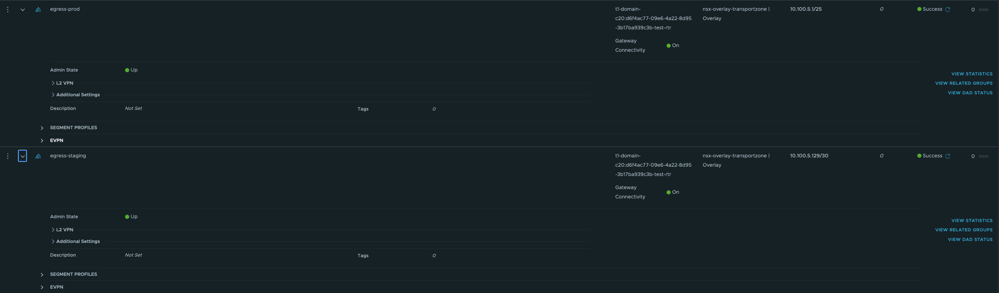
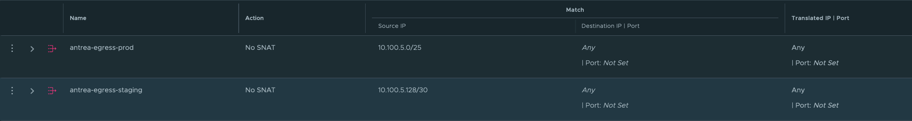

Controlling the egress IPs for K8s Pods within Tanzu
homelabnested labvmwareesxinetworktanzuantreansx
1919 Words Words // ReadTime 8 Minutes, 43 Seconds
2024-12-21 19:54 +0100
Introduction
The integration of K8s platforms within a enterprise network environment is always a challenge regarding security and routing of certain K8s pods. Multiple pods are running in the same K8s cluster but might have different functinalities and requirements to access services outside of the K8s platform. What should you do, if you are unable to assign a specific outgoing IP to a specific pod or group of pods? In this case you are forced to treat all the pods within a specific K8s cluster the same way and create firewall rules based on this. That does mean all the different pods within a K8s cluster will have network permissions and it is very challenging to implement further isolation.
For legacy applications which were deployed on physical servers or specific virtual servers, each of those servers got a specific IP assigned. Based on this it was possible to create specific firewall rules for teh specific servers based on the different requirements to access other services or beeing accessed from other systems. This brought some isolation and overall security to the enterprise networks and is also a demand to satisfy the guidelines of some specific authorities like BAFIN or based on DORA.
Why is this now a challenge within K8s? K8s is an additinal layer of abstraction to increase the efficiency to deploy different services on a single server. The layer of K8s will be installed ontop of an operationg system, which is either installed on a physical or virtual server. Since the most enterprised does have a high ratio of virtualisation, it is more likli that K8s is deployed ontop of VM or bunch of VMs to build a K8s cluster. Each of those VMs is now called K8s worker or master and will run one or pultiple K8s services. In this case all the different VMs still have a specific IP adress that can be used in firewall rules, but the K8s services are getting deployed ontop of thoese VMs. That means multiple K8s services are sharing the same group of VMs and if a K8s service wants to reach a different service outside of K8s it will leave the K8s worker or master by using the IP of those VMs.
But in K8s there are multiple solutions for this challenge. I would like to tell you about one solution that can be used in the K8s platform by VMware Tanzu (VKS) and requires the K8s network plugin (CNI) “Antrea”. The specific feature is called “Antrea Engress”.
I will not show how to deploy the Tanzu supervisor cluster, but how to create a K8s guest cluster with the required features enabled and how to assign specific egress IPs to specific K8s pods.
Lab environment
For the tests I worked with the following lab environment.
- Three nested ESXi hosts of version 8.0.3, 24022510
- vCenter server of version 8.0.3, 24022515
- NSX Datacenter version 4.2.1.1
- Tanzu supervisor cluster integrated with NSX Datacenter
Requirements
My tests are based on assigning seperate egress subnets to different K8s pods within the same K8s cluster. To implement this solution the following versions are required.
- TKr 1.31
- TKG Services 3.2.0
Further it is required to deploy Tanzu with NSX as networking layer and using Antrea as CNI. For NSX a specific feature called “Child Segments” will be used to get this implementation done, so take care you current NSX version is supporting this feature.
The next requirement is optional, but influence the overall configuration that needs to be done manually. If you are using NAT mode, you need to manually create NoSNAT rules for the NSX child segments that will be cerated within the process. If NAT mode is disabled, this manuall configuration is not required.
NSX child segments
Before digging into the steps how to assign seperate egress subnets to different K8s pods, I will shortly describe whar NSX child segments are. If you are not aware of NSX and the routers within NSX, you need to familiarize with that first. Therefore I would recommend the NSX reference design guide https://community.broadcom.com/viewdocument/nsx-reference-design-guide-42-v10?CommunityKey=b76535ef-c5a2-474d-8270-3e83685f020e&tab=librarydocuments.
NSX child segents are based on a parent segment which is connected to a T1 router. The child segment it self can be either connected to the same or a different T1 router than the parent segment. The connection between the parent and the child segment will be done by a VLAN tag and two child segments cannot share the same VLAN tag.
This feature is currently not available in the UI and those child segments can be wither created through the NSX API or the Antrea NSX control application.
Based on this feature different pods can be assigned to different subnets without the requirement of assigning different portgroups to the K8s worker and master nodes. Those subnets also does not interfere withe the reserved IPs for the assigned namespace CIDR of the K8s clusters.
More information of the child sgements can be discoverd in the documentation of Broadcom. https://techdocs.broadcom.com/us/en/vmware-cis/nsx/vmware-nsx/4-2/administration-guide/segments/creating-a-child-segment.html
Prepering the K8s guest cluster
Before creating the K8s cluster intself, it is required to create the Antrea configuration to enable the feature “EgressSeperateSubnet”. The following example shows an example configuration. This configuration does not negate the default settings of Antrea, which are not mentioned in this YAML-File. I also added the NSX integration in my configuration to integrate the NSX Distributed Firewall with Antrea, but this will not be further discussed in this article. Further the feature of “NodePortLocal” is also not required for the assignment of dedicated egress subnets.
The name of the K8s object “AntreaConfig” is very important and should match the prefix -antrea-package, otherwhise the Antrea config will not be assigned. Further this configuration needs to be added before the K8s cluster is created. It is also possible to adjust the configuration after the deployment of the K8s cluster, but this is much more complex and required a reboot of the K8s nodes.
apiVersion: cni.tanzu.vmware.com/v1alpha1
kind: AntreaConfig
metadata:
name: tkc-test01-antrea-package #prefix required
namespace: test
spec:
antrea:
config:
featureGates:
EgressSeparateSubnet: true
NodePortLocal: true
antreaNSX:
enable: true #false by default
After the configuration is applied, you can start with the K8s cluster deployment. Following my example K8s cluster YAML-File.
apiVersion: run.tanzu.vmware.com/v1alpha3
kind: TanzuKubernetesCluster
metadata:
name: tkc-test01
namespace: test
spec:
topology:
controlPlane:
replicas: 1
vmClass: best-effort-medium
storageClass: labnfs
tkr:
reference:
#name: v1.29.4---vmware.3-fips.1-tkg.1
name: v1.31.1---vmware.2-fips-vkr.2
nodePools:
- replicas: 2
name: worker
vmClass: best-effort-medium
storageClass: labnfs
settings:
network:
pods:
cidrBlocks: ["192.168.0.0/16"]
services:
cidrBlocks: ["10.196.0.0/12"]
Creating test K8s deployments
As a next step I created two namespaces to assign two different egress subnets later on.
- Namespace 1: prod
- Namespace 2: staging
In each of those namespaces I created a test deployment based on the follwoing YAML-File.
apiVersion: apps/v1
kind: Deployment
metadata:
name: web
spec:
replicas: 2
selector:
matchLabels:
app: web
template:
metadata:
labels:
app: web
spec:
containers:
- name: nginx
image: nginx:latest
The commands used for this deployment are shown below.
Creating namespaces:
kubectl create ns <namespace name>
Creating deployment:
kubectl apply -f web.yaml -n <namespace name>
In addition to the K8s deployments I deployed a docker container outside my NSX environment based on the following steps.
- Create folder your Dockerfile and create the Dockerfile
FROM tiangolo/uvicorn-gunicorn-fastapi:python3.9
COPY ./app /app
- Create a subolder called “app”
- Create a file with the name “main.py” in the subfolder “app” with the content below.
from fastapi import FastAPI, Request
from fastapi.responses import HTMLResponse
app = FastAPI()
@app.get("/", response_class=HTMLResponse)
async def index(request: Request):
client_host = request.client.host
return "Requester IP: " + client_host + "\n"
- Go back to the folder where the Dockerfile is located and build the docker image
docker build -t showfastip .
- Run the docker imaged with a choosen port, which is not in use. I decided to use external port 88
docker run -d -p 88:80 showfastip
Create child segments
I decided to create the child segments with the commandline tool “antreansxctl”. This commandline tool can be either downloaded to your local PC or you can connect to the Antrea pod of your K8s cluster to execute the desired command.
A connection to the internetworking pod can be done by the kubectl command below.
kubectl exec -n vmware-system-antrea interworking-5bdd8f5b5f-wd6wg -c mp-adapter -it -- bash
The command to create a child segment requires the follwoing information.
- Path of the parent segment: can be gathered via NSX API by the code “curl –location –request GET ‘https://nsx.lab.home/policy/api/v1/infra/segments/' –header ‘Content-Type: application/json’ –header ‘Authorization: Basic ’”
- NSX Manager IP
- NSX Manager User and Password
- VLAN ID used to tag the child segment (this VLAN ID will not be visible outside of NSX and will to overlap with any VLAN on the underlay network)
- CIDR and Gateway IP of the child segmnet (the gateway IP will be created on the T1 router used for the child segment, which is the same T1 as for the parent T1 in this case)
Command description:
antreansxctl child-segment-create --nsx-managers=<NSX Manager IP> --user=admin --password='<NSX Manager admin password>' --cidr="<CIDR child segment>" --gateway="<Gateway IP of child segment>" --parent="<path of parent segment>" --vlan=<vlan id> <name of child segment>
An example of this command is shown below.
antreansxctl child-segment-create --nsx-managers=10.0.1.12 --user=admin --password='VMware1!VMware1!' --cidr="10.100.5.0/25" --gateway="10.100.5.1" --parent="/infra/segments/vnet_60f55536-121d-40d0-ac48-4cb976decf3d_0" --vlan=110 egress-prod
I executed the same command for staging with some other parameters.
antreansxctl child-segment-create --nsx-managers=10.0.1.12 --user=admin --password='VMware1!VMware1!' --cidr="10.100.5.128/30" --gateway="10.100.5.129" --parent="/infra/segments/vnet_60f55536-121d-40d0-ac48-4cb976decf3d_0" --vlan=120 egress-staging
The two child segments are now visible in the NSX UI as shown in the following picture. 
Create and assign antrea external ip pools
I created one external IP pool for staging and one for prod.
Prod external IP Pool YAML-File:
apiVersion: crd.antrea.io/v1beta1
kind: ExternalIPPool
metadata:
name: prod-external-ip-pool
spec:
ipRanges:
- start: 10.100.5.10
end: 10.100.5.20
subnetInfo:
gateway: 10.100.5.1
prefixLength: 25
vlan: 110
nodeSelector: {}
Staging external IP pool YAML-File:
apiVersion: crd.antrea.io/v1beta1
kind: ExternalIPPool
metadata:
name: staging-external-ip-pool
spec:
ipRanges:
- start: 10.100.5.130
end: 10.100.5.130
subnetInfo:
gateway: 10.100.5.129
prefixLength: 30
vlan: 120
nodeSelector: {}
Creating the two IP pools:
kubectl apply -f antrea-externalippool-prod.yaml
kubectl apply -f antrea-externalippool-staging.yaml
YAML-Files for assignment of prod IP pool to prod web deployment:
apiVersion: crd.antrea.io/v1beta1
kind: Egress
metadata:
name: egress-prod-web
spec:
appliedTo:
namespaceSelector:
matchLabels:
kubernetes.io/metadata.name: prod
podSelector:
matchLabels:
app: web
externalIPPool: prod-external-ip-pool
YAML-Files for assignment of staging IP pool to prod web deployment:
apiVersion: crd.antrea.io/v1beta1
kind: Egress
metadata:
name: egress-staging-web
spec:
appliedTo:
namespaceSelector:
matchLabels:
kubernetes.io/metadata.name: staging
podSelector:
matchLabels:
app: web
externalIPPool: staging-external-ip-pool
Assigning the external IP pools:
kubectl apply -f egress-prod-web.yaml -n prod
kubectl apply -f egress-staging-web.yaml -n staging
The following command shows the assigned IPs of the two IP pools.
kubectl get egress
NAME EGRESSIP AGE NODE
egress-prod-web 10.100.5.10 42s tkc-test01-hsqsg-vmm2w
egress-staging-web 10.100.5.130 28s tkc-test01-worker-s9s27-qqhrg-z6jd5
Create noSNAT rule
As already mentioned it is required to manually configure a noSNAT rule for the external IP pool subnets, if NAT mode is enabled for the used vSphere Namespace where the K8s cluster is deployed. The noSNAT rule needs to be configured on the T1 router where the child segments are connected as shown in the picture below.

Testing if egress ip pool assigment is working
The following tests are showing an access from the web pod in both namespaces and which external IP will be used to access the webserver deployed in dockers as mentioned earlier. The Requester IP is the egress IP visible for the target web serverrunning in docker.
stevenschramm@Stevens-MacBook-Pro homelab % kubectl -n prod exec web-54d6b8f598-7ddqv -- curl -s 192.168.178.222:88
Requester IP: 10.100.5.10
stevenschramm@Stevens-MacBook-Pro homelab % kubectl -n staging exec web-54d6b8f598-slnm8 -- curl -s 192.168.178.222:88
Requester IP: 10.100.5.130